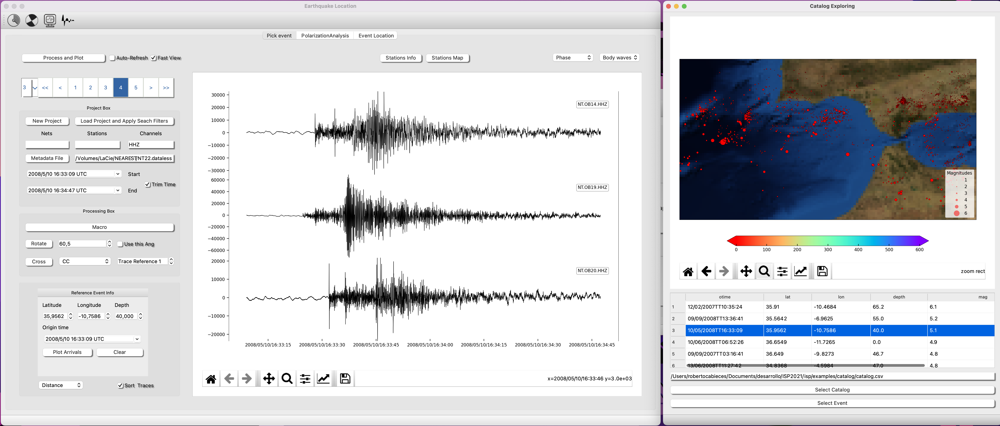
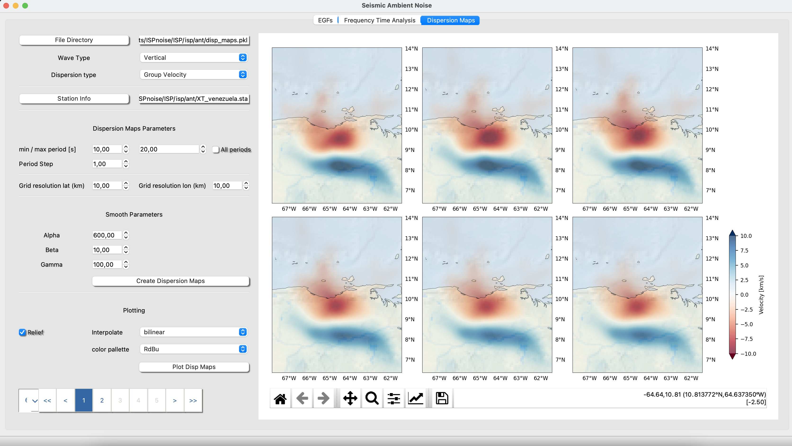
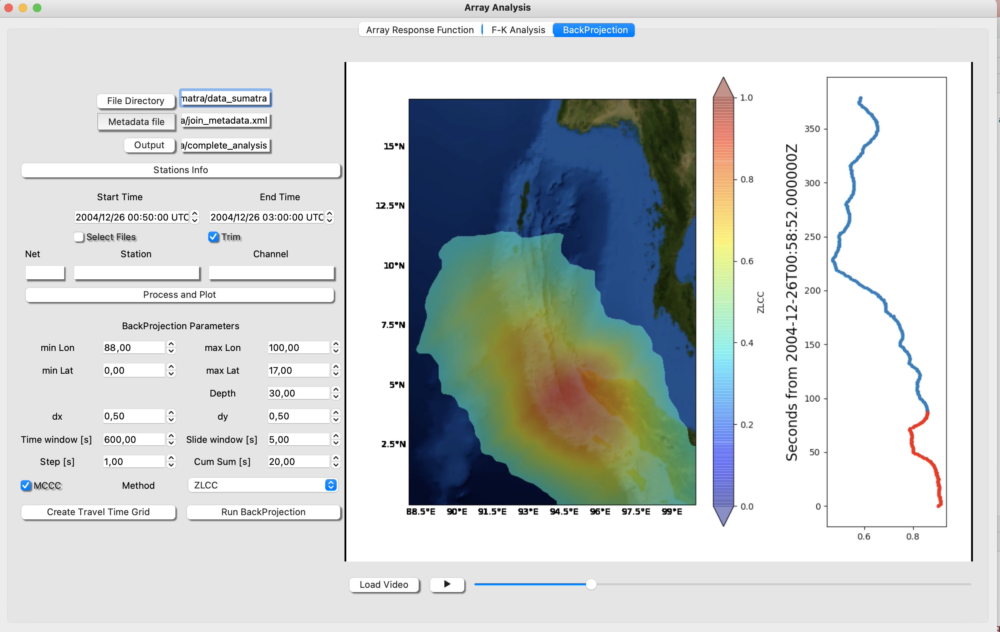
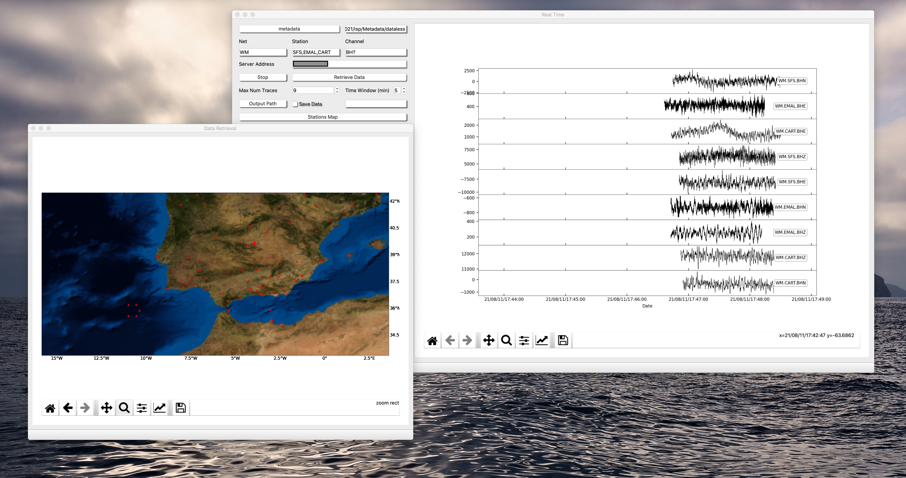

Welcome to Integrated Seismic Program (ISP) Documentation
Integrated Seismic Program is an amenable toolbox that joins functionality and standard algorithms commonly used in seismology. The complete software is separated in several modules and each module is designed to overcome a specific task.
In this tutorial will show how you can master ISP
GitHub ISP github.
Follow us in: twitter.
Reference Paper:
Roberto Cabieces, Andrés Olivar‐Castaño, Thiago C. Junqueira, Jesús Relinque, Luis Fernandez‐Prieto, Jiří Vackár, Boris Rösler, Jaime Barco, Antonio Pazos, Luz García‐Martínez; Integrated Seismic Program (ISP): A New Python GUI‐Based Software for Earthquake Seismology and Seismic Signal Processing. Seismological Research Letters 2022;; 93 (3): 1895–1908. doi: https://doi.org/10.1785/0220210205
News 2022-10-20
The ISP team has recently developed the new module:
- Earthquake Analysis module Upgraded
In thin upgrade you can create your project from your individual files or from your sds structure. We have also included a fast way to search your waveforms from a catalog (./isp/examples/catalog/).

- Seismic Ambient Noise Tomography
For now, It is available the Empirical Green Functions retrieval of vertical and Horizontal components, synchronize clocks using EGFs ,a tool to measure Group and Phase velocity from dispersion curves and create dispersion maps.
An example with the results of Cabieces et al., 2022 "Upper lithospheric structure of northeastern Venezuela from joint inversion of surface wave dispersion and receiver functions" can be found in ./isp/ant

- Back Projection
We have recently developed the BackProjection tool which is included in the Array Anaysis module. Please,see also the tutorial for further details. Testing

- Real Time Acquisition
You can play with this new tool, soon we incorporate the corresponding tutorial.
